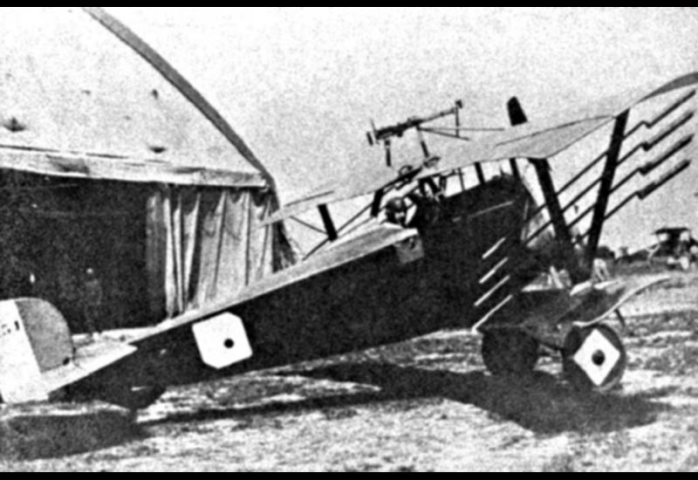

Çüngohawk HW-39
Üretici Firma
Çüngoland Aircraft Industries (ÇAI)
İlk Üretim Tarihi
1968
Seri Üretim Başlangıç Tarihi
1970
Seri Üretim Bitiş Tarihi
1993
Kullanıldığı Ülkeler
Çüngoland, Çekoslavakya, Macaristan, Batı Almanya, Ukrayna,Tunus, Suriye,Romanya, Nijerya, Litvanya, Türkmenistan, Irak,Kazakistan, Bulgaristan ve Mısır
Günümüzde Çüngoland Aircraft Industries (ÇAI) olarak bilinen Çüngohawk şirketi, yeni liberaleşme politikaları sayesinde yeni bir özel şirketti ve havacılık alanında kendini geliştirmek istiyordu.Nitekim 1968 yılında HW39X kod adlı bir t urbojet eğitim uçağının prototipini tamamladı.1969 yılında Paris Airshow'a gitti ve hatırı sayılır sayıda sipariş almıştı.30 adet Çekoslavakya siparişi ve 5 adet Arnavutluk siparişi ise Çüngohawk'ı çok şaşırtmıştı.1970 yılında ise HW-39 Albatros olarak seri üretime geçmişti.Hafif ve çevik bir eğitim uçağı olan HW-39'da K-13 ve R-60 havadan havaya füzeler,7.62 mm'lik makineli tüfek podları,serbest düşümlü bombalar ve misket bombaları,roket fırlatıcıları ve havada atılabilir deposu vardı.İlk savaş tecrübesini 1971 Çüngoland İç Savaşı'nda gerçekleştiren HW-39 ciddi bir başarıyı yakalamıştı.Komünist cepheyi epey terleten HW-39, iç savaş sonrasında komünist yönetim tarafından da üretime izin verilmişti.1993 yılına kadar üretilen HW-39; Çüngoland,Çekoslavakya,Macaristan, Batı Almanya,Ukrayna,Tunus,Suriye,Romanya,Nijerya, Litvanya,Türkmenistan,Irak,Kazakistan,Bulgaristan ve Mısır tarafından kullanılmıştır.Ayrıca HW-39MS adıyla Çekoslavak versiyonu ve HW-39ER (Extended Range) adı ile uzun menzilli modeli üretilmiştir.